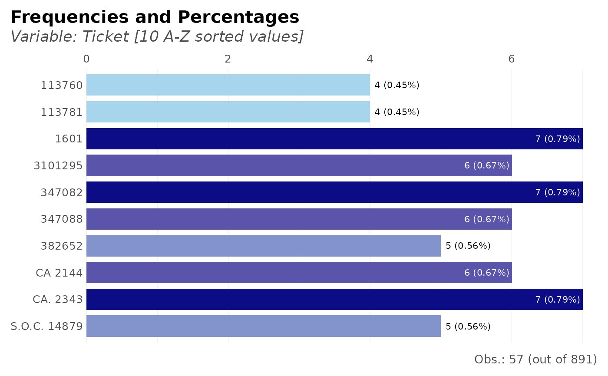

This function lets the user group, count, calculate percentages and cumulatives. It also plots results if needed. Tidyverse friendly.
freqs( df, ..., wt = NULL, rel = FALSE, results = TRUE, variable_name = NA, plot = FALSE, rm.na = FALSE, title = NA, subtitle = NA, top = 20, abc = FALSE, save = FALSE, subdir = NA )
Arguments
| df | Data.frame |
|---|---|
| ... | Variables. Variables you wish to process. Order matters. If no variables are passed, the whole data.frame will be considered |
| wt | Variable, numeric. Weights. |
| rel | Boolean. Relative percentages (or absolute)? |
| results | Boolean. Return results in a dataframe? |
| variable_name | Character. Overwrite the main variable's name |
| plot | Boolean. Do you want to see a plot? Three variables tops. |
| rm.na | Boolean. Remove NA values in the plot? (not filtered for numerical output; use na.omit() or filter() if needed) |
| title | Character. Overwrite plot's title with. |
| subtitle | Character. Overwrite plot's subtitle with. |
| top | Integer. Filter and plot the most n frequent for categorical values. Set to NA to return all values |
| abc | Boolean. Do you wish to sort by alphabetical order? |
| save | Boolean. Save the output plot in our working directory |
| subdir | Character. Into which subdirectory do you wish to save the plot to? |
See also
Other Frequency:
freqs_df(),
freqs_list(),
freqs_plot()
Other Exploratory:
corr_cross(),
corr_var(),
crosstab(),
df_str(),
distr(),
freqs_df(),
freqs_list(),
freqs_plot(),
lasso_vars(),
missingness(),
plot_cats(),
plot_df(),
plot_nums(),
tree_var(),
trendsRelated()
Other Visualization:
distr(),
freqs_df(),
freqs_list(),
freqs_plot(),
gg_bars(),
gg_pie(),
noPlot(),
plot_chord(),
plot_survey(),
plot_timeline(),
theme_lares(),
tree_var()
Examples
Sys.unsetenv("LARES_FONT") # Temporal data(dft) # Titanic dataset # How many survived? dft %>% freqs(Survived)#> # A tibble: 2 x 5 #> Survived n p order pcum #> <lgl> <int> <dbl> <int> <dbl> #> 1 FALSE 549 61.6 1 61.6 #> 2 TRUE 342 38.4 2 100# How many survived per Class? dft %>% freqs(Pclass, Survived, abc = TRUE)#> # A tibble: 6 x 6 #> Pclass Survived n p order pcum #> <fct> <lgl> <int> <dbl> <int> <dbl> #> 1 1 FALSE 80 8.98 1 8.98 #> 2 1 TRUE 136 15.3 2 24.2 #> 3 2 FALSE 97 10.9 3 35.1 #> 4 2 TRUE 87 9.76 4 44.9 #> 5 3 FALSE 372 41.8 5 86.6 #> 6 3 TRUE 119 13.4 6 100# How many survived per Class with relative percentages? dft %>% freqs(Pclass, Survived, abc = TRUE, rel = TRUE)#> # A tibble: 6 x 6 #> # Groups: Pclass [3] #> Pclass Survived n p order pcum #> <fct> <lgl> <int> <dbl> <int> <dbl> #> 1 1 FALSE 80 37.0 1 37.0 #> 2 1 TRUE 136 63.0 2 100 #> 3 2 FALSE 97 52.7 1 52.7 #> 4 2 TRUE 87 47.3 2 100 #> 5 3 FALSE 372 75.8 1 75.8 #> 6 3 TRUE 119 24.2 2 100# Using a weighted feature dft %>% freqs(Pclass, Survived, wt = Fare/100)#> # A tibble: 6 x 6 #> Pclass Survived n p order pcum #> <fct> <lgl> <dbl> <dbl> <int> <dbl> #> 1 1 TRUE 130. 45.3 1 45.3 #> 2 1 FALSE 51.7 18.0 2 63.4 #> 3 3 FALSE 50.9 17.7 3 81.1 #> 4 2 TRUE 19.2 6.69 4 87.8 #> 5 2 FALSE 18.8 6.56 5 94.3 #> 6 3 TRUE 16.3 5.68 6 100# Let's check the results with plots: #' # How many survived and see plot? dft %>% freqs(Survived, plot = TRUE)# How many survived per class? dft %>% freqs(Survived, Pclass, plot = TRUE)# Per class, how many survived? dft %>% freqs(Pclass, Survived, plot = TRUE)# Per sex and class, how many survived? dft %>% freqs(Sex, Pclass, Survived, plot = TRUE)# Frequency of tickets + Survived dft %>% freqs(Survived, Ticket, plot = TRUE)#># Frequency of tickets: top 10 only and order them alphabetically dft %>% freqs(Ticket, plot = TRUE, top = 10, abc = TRUE)#>